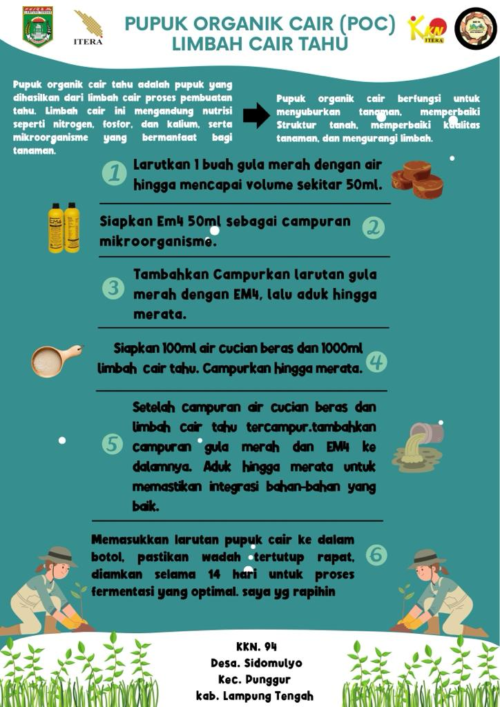

Industri Tahu, sebagai salah satu produsen limbah organik, menghasilkan limbah cair yang memiliki potensi mencemari lingkungan. Limbah cair ini berasal dari proses perendaman, pencucian kedelai, penyaringan, dan pengepresan tahu, seringkali dibuang tanpa pengolahan, menyebabkan bau tidak sedap dan menjadi pencemaran lingkungan. Limbah cair tahu mengandung zat berbahaya seperti BOD dan TSS, namun juga mengandung unsur hara yang berguna bagi tanaman, seperti P, N, K, Mg, Ca, dan Fe.
Inovasi pembuatan pupuk organik cair dari limbah cair tahu muncul sebagai solusi untuk mengatasi dampak negatif ini. Pupuk organik cair yang dihasilkan melalui daur ulang limbah cair tahu tidak hanya membantu mengurangi pencemaran lingkungan, tetapi juga menyediakan senyawa organik yang bermanfaat untuk menyuburkan tanaman secara alami. Pupuk organik cair ini memiliki potensi tinggi untuk meningkatkan kesuburan tanah, memperbaiki struktur tanah, dan mengurangi ketergantungan pada pupuk kimia.
Proses fermentasi dilakukan dengan menambahkan air gula merah, EM-4, limbah cair tahu, serta air cucian beras yang membutuhkan waktu selama 14-15 hari. Setelah terfermentasi selama 14-15 hari, pupuk organik cair dapat langsung dipakai untuk memupuk tanaman.
Berikut adalah proses pembuatan pupuk :
